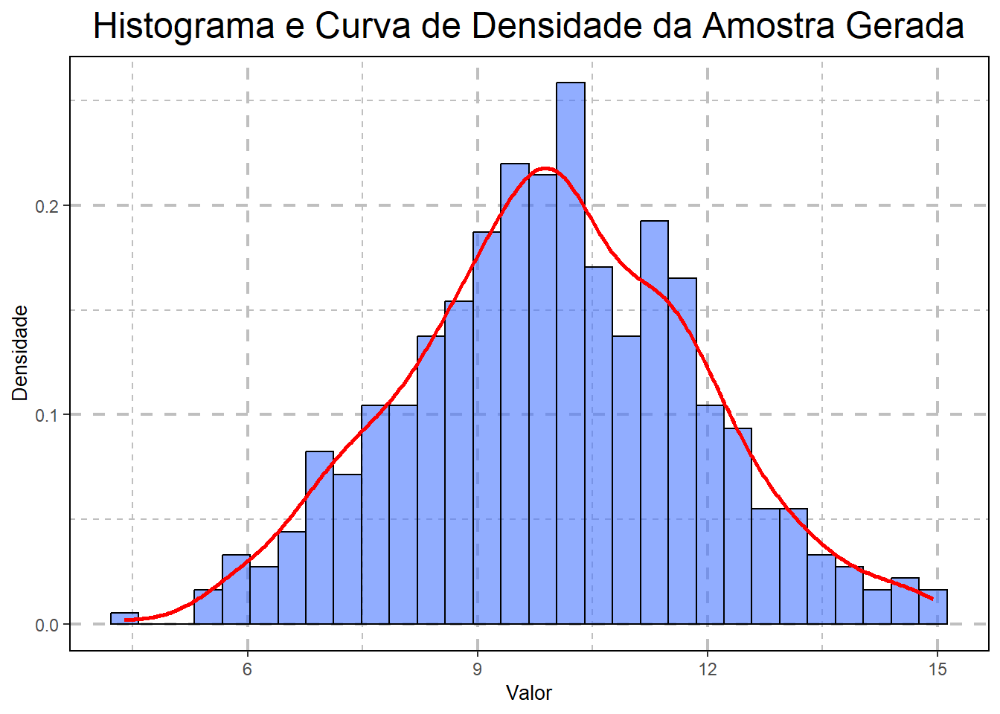
Trabalho 2 - Inferência Estatística com Abordagem Bayesiana
PROBLEMA: Considere uma amostra \(X = (X_1,...,X_N)\) independente e identicamente distribuída da distribuição normal com média µ e variância \(σ^2\), \(µ ∈ R\) e \(σ^2 ∈ R+\), ambas desconhecidas. Seu objetivo é estimar \(µ\) e \(σ^2\). Para isto utilizará uma distribuição a priori conjugada natural.
Parte 1:
a) Geração da amostra: Escolha valores apropriados para \((µ,σ^2)\). Fixado estes parâmetros, gere uma amostra de tamanho n = 500 da distribuição amostral. Armazene estes valores para análises posteriores. Faça uma apresentação gráfica apropriada da amostra gerada. Determine a média, variância, curtose e assimetria da amostra gerada.
Fixando valores para \(\mu\) e \(\sigma^2\)
No decorrer do Trabalho, foram utilizados os seguintes valores para os parâmetros:
\(µ = 10\)
\(σ^2 = 4\)
Análise gráfica da amostra
Pelo gráfico, nota-se que o formato da curva de densidade da amostra é similar a um sino, indicando que ela é aproximadamente normal. Além disso, também é possível perceber que a distribuição no gráfico está centrada em um valor próximo de 10, o que era de se esperar, dado que a amostra foi gerada de uma Normal com média 10.
Medidas de dispersão e de forma
| Média | Variância | Desvio Padrão | Curtose | Assimetria |
|---|---|---|---|---|
| \(9.974\) | \(3.595\) | \(1.896\) | \(-0.191\) | \(0.032\) |
Média- Próxima do valor real \(µ = 10\)
Variância- Próxima do valor real \(σ^2 = 4\)
Desvio Padrão- Próximo do valor real \(σ = \sqrt{σ^2} = \sqrt{4} = 2\)
Curtose- Próxima de 0, indicando que a curva de densidade da amostra é Mesocúrtica, isto é, ela tem achatamento semelhante ao da curva normal
Assimetria- Próxima de 0, indicando que a curva de densidade da amostra é simétrica
b) Construção da sua distribuição a priori: Construa sua distribuição a priori conjugada natural para \((µ,σ^2)\) tal que a distribuição para \(µ\) seja centrada no valor real para a média populacional (o valor usando na geração dos dados) e que seja pouco informativa (isto é tenha uma variância grande) e que a distribuição para \(σ^2\) seja pouco informativa. Faça o gráfico das distribuições a priori para \(µ\) e \(σ^2\). Calcule a média e a variância a priori para \(µ\) e \(σ^2\).
Definindo a família distribuições para \((µ, σ^2)\) conjugada natural
A família de distribuições para \((µ, σ^2)\) que é conjugada natural da família \(Normal( µ,σ^2)\) com ambos os parâmetros desconhecidos é:
\(µ ∼ t - Student(m, V, a, d)\), tal que \(m ∈ R, V > 0, a > 0, d > 0\)
\(σ^2 ∼ Gama − Inversa(a, d)\), tal que \(a > 0, d > 0\)
Escolhendo valores para os parâmetros das distribuições de \(µ\) e \(σ^2\)
\(µ ∼ t - Student(10, 250, 8.128, 4.032)\)
\(σ^2 ∼ Gama − Inversa(8.128, 4.032)\)
Os parâmetros foram escolhidos de modo que ambas as distribuições a priori estão centradas nos valores de \(µ\) e \(σ^2\) originais, mas possuem uma variância grande, o que as torna pouco informativas.
Cálculo da Média e Variância de \(µ\)
\(E(µ) = m = 10\)
\(V(µ) = \frac{aV}{d − 2} = \frac{8.128*250}{4.032 − 2} = 1000\)
Cálculo da Média e Variância de \(σ^2\)
\(E(σ^2) = \frac{a}{d − 2} = \frac{8.128}{4.032 − 2} = 4\)
\(V(σ^2) = \frac{2a^2}{(d − 2)^2(d − 4)} = \frac{2*8.128^2}{(4.032 − 2)^2(4.032 − 4)} = 1000\)
Resumo
| Parâmetro | Distribuição a Priori | Média a Priori | Variância a Priori |
|---|---|---|---|
| \(µ\) | t-Student(10, 8.128, 250, 4.032) | \(10\) | \(1000\) |
| \(σ^2\) | Gama-Inversa(8.128, 4.032) | \(4\) | \(1000\) |
A tabela confirma que as distribuições a priori são não informativas e estão centradas nos valores reais de \(µ\) e \(σ^2\), isto é:
\(E(µ) = E(µ_{real}) = 10\)
\(E(σ^2) = E(σ^2_{real}) = 4\)
\(Var(µ) = Var(σ^2) = 1000\)
Análise gráfica da distribuição de \(µ\)
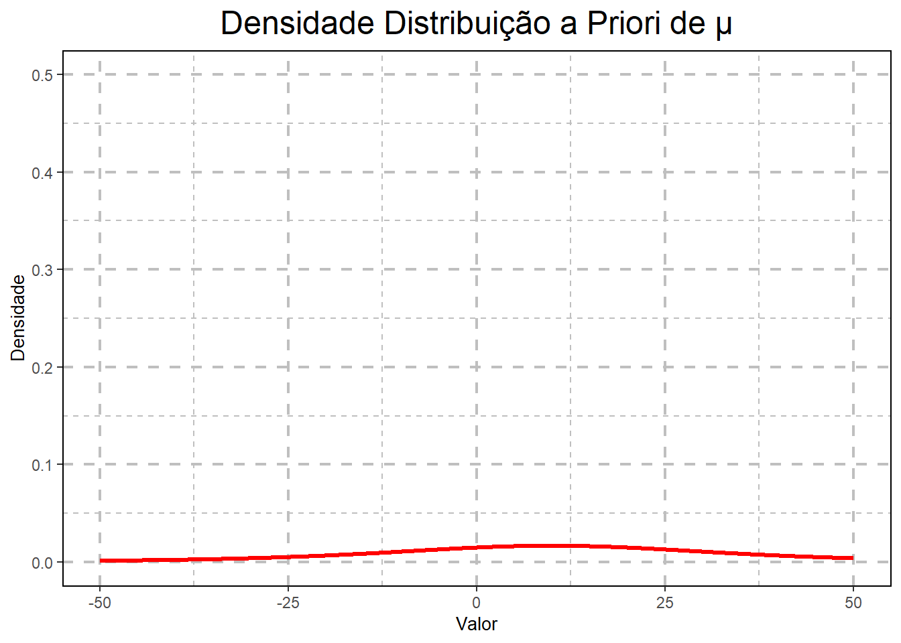
O gráfico ilustra justamente a alta incerteza da distribuição a priori, haja vista que, mesmo centrada em 10, sua curva atribui uma probabilidade similar tanto para valores próximos, quanto para valores distantes do central.
Análise gráfica da distribuição de \(σ^2\)
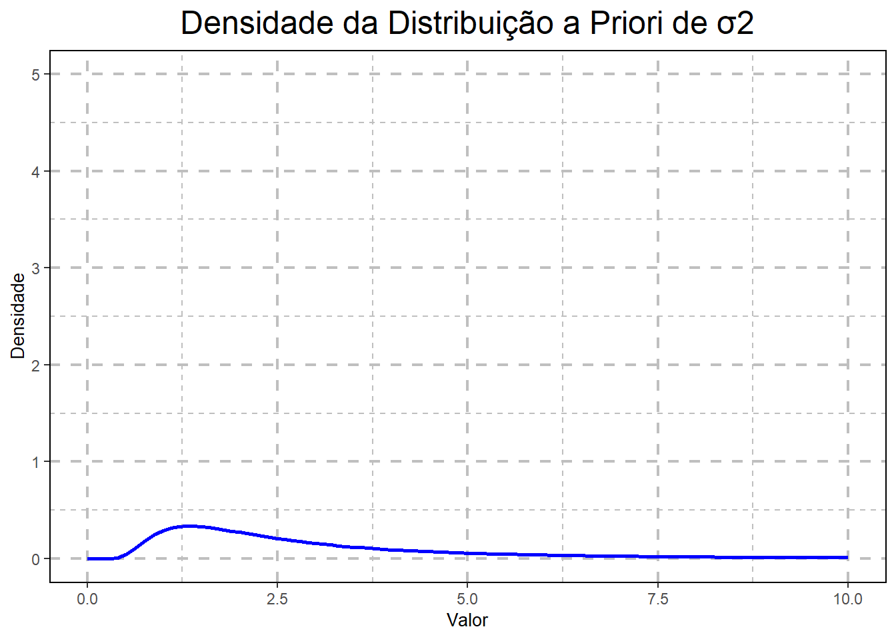
A priori traz uma massa de probabilidade próxima do valor real, mas ainda trazendo alguma massa de probabilidade para valores mais distantes, mostrando a incerteza atrelada à informação.
c) Considerando a distribuição a priori construída no ítem (b) e os dados gerados no ítem (a), determine a distribuição a posteriori exata para \(µ\) e \(σ^2\). Faça o gráfico das distribuições a posteriori para \(µ\) e \(σ^2\). Calcule a média, a moda e a variância a posteriori para \(µ\) e \(σ^2\). Considerando a média a posteriori como o estimador dos parâmetros \(µ\) e \(σ^2\) determine o viés das estimativas obtidas. Considerando a moda a posteriori como o estimador dos parâmetros \(µ\) e \(σ^2\) determine o viés das estimativas obtidas.
As distribuições a posteriori exatas para \(µ\) e \(σ^2\) são:
\(µ|x ∼ t - Student(m^*, V^*, a^*, d^*)\), tal que \(m^* ∈ R, V^* > 0, a^* > 0, d^* > 0\)
\(σ^2|x ∼ Gama − Inversa(a^*,d^*)\), tal que \(a^* > 0, d^* > 0\)
em que
\(a^* = a + \sum_{i_1}^{n} x_i^2 + \frac{m^2}{V} - \frac{(nV\bar{x} + m)^2}{V(nV+ 1)} = 1801.805\)
\(d^* = d + n = 504.032\)
\(m^* = \frac{nV\bar{x} + m}{nV+ 1} = 9.974\)
\(V^* = \frac{V}{nV + 1} = 0.002\)
Cálculo da Média, Moda e Variância de \(µ|x\)
\(E(µ|x) = m^* = 9.974\)
\(\text{Moda}(\mu|x) = m^* = 9.974\)
\(V(µ|x) = \frac{a^*V^*}{d^* − 2} = \frac{1801.805*0.002}{504.032 − 2} = 0.007\)
Cálculo da Média, Moda e Variância de \(σ^2|x\)
\(E(σ^2|x) = \frac{a^*}{d^* − 2} = \frac{1801.805}{504.032 − 2} = 3.589\)
\(\text{Moda}(\sigma^2|x) = \frac{a^*}{d^*+2} = \frac{504.032}{1801.805+2}=3.561\)
\(V(σ^2|x) = \frac{2(a^*)^2}{(d^* − 2)^2(d^* − 4)} = \frac{2*1801.805^2}{(504.032 − 2)^2(504.032 − 4)} = 0.051\)
Resumo
| Parâmetro | Distribuição a Posteriori | Média a Posteriori | Variância a Posteriori | Moda a Posteriori |
|---|---|---|---|---|
| \(µ\) | t-Student(9.974, 1801.805, 0.002, 504.032) | \(9.974\) | \(0.007\) | \(9.974\) |
| \(σ^2\) | Gama-Inversa(1801.805, 504.032) | \(3.589\) | \(0.051\) | \(3.561\) |
Cálculo do Viés
Média a posteriori como o estimador dos parâmetros
\(Viés(\mu) = 9.974 - 10 = -0.026\)
\(Viés(\sigma^2) = 3.589 - 4 = -0.411\)
Moda a posteriori como o estimador dos parâmetros
\(Viés(\mu) = 9.974 - 10 = -0.026\)
\(Viés(\sigma^2) = 3.561 - 4 = -0.493\)
Resumo
| Parâmetro | Valor Real | Média a Posteriori | Moda a Posteriori | Viés da média como estimador | Viés da moda como estimador |
|---|---|---|---|---|---|
| \(µ\) | \(10\) | \(9.974\) | \(9.974\) | \(-0.026\) | \(-0.026\) |
| \(σ^2\) | \(4\) | \(3.589\) | \(3.561\) | \(-0.411\) | \(-0.493\) |
É possível notar que a média e a moda a posteriori são ótimos estimadores para \(\mu\), dado que seus valores coincidem em 9.974 e ambos apresentam um viés mínimo e próximo a zero, de -0.026. Para o parâmetro \(\sigma^2\), observa-se que ambos os estimadores subestimam o valor real de 4. A média a posteriori se mostra um estimador ligeiramente melhor, visto que seu viés de -0.411 é um pouco menor em valor absoluto quando comparado ao viés da moda a posteriori, que é de -0.493. Embora a diferença entre os estimadores de \(\sigma^2\) não seja tão discrepante, o fato de a moda apresentar um viés maior, subestimando mais o valor real, ainda pode ser justificado por ela representar apenas o pico da distribuição. Dessa forma, a moda acaba sendo menos sensível à cauda pesada típica da distribuição gamma-inversa, uma característica que é melhor capturada pela média.
Análise gráfica da distribuição de \(µ|x\)
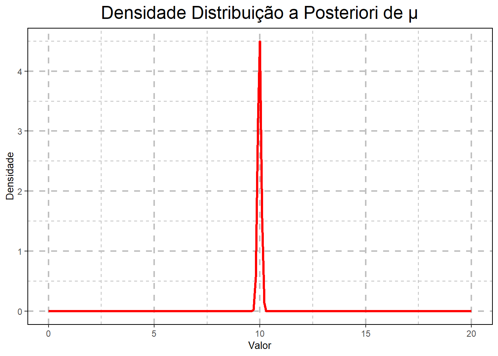
A curva a posteriori está centrada em um valor muito próximo de 10 e atribui uma alta probabilidade para esse valor, assumindo uma incerteza significativamente menor do que a da distribuição a priori.
Análise gráfica da distribuição de \(σ^2|x\)
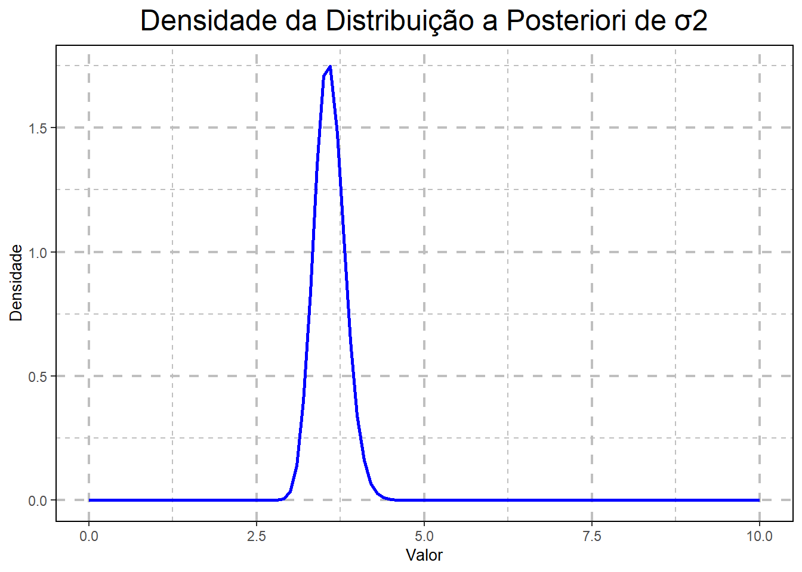
A curva traz a maior parte da sua massa de probabilidade entre 2.5 e 5, onde se encontra o verdadeiro valor do parâmetro, reduzindo a incerteza quando comparada à priori.
Parte 2:
Considerando a amostra gerada em (a) e a distribuição a priori conjugada natural para \((µ,σ^2)\) em (b)
d) Encontre as expressões das funções densidades para \(µ | σ^2,x\) e \(σ^2 | µ,x\) (Isto é, das distribuições condicionais completas a posteriori.)
A densidade a posteriori conjunta é proporcional ao produto da verossimilhança pela priori: \[p(\mu,\sigma^{2}|x)\propto L(\mu,\sigma^{2}|x)p(\mu|\sigma^{2})p(\sigma^{2})\]
De modo que a verossimilhança da amostra Normal é: \[L(\mu,\sigma^{2}|x)\propto(\sigma^{2})^{-n/2}\exp\left(-\frac{1}{2\sigma^{2}}\sum_{i=1}^{n}(x_{i}-\mu)^{2}\right)\]
- Condicional completa para \(\mu\): Tratando \(\sigma^2\) como uma constante e isolando apenas os termos que dependem de \(\mu\) na distribuição conjunta, obtemos o núcleo de uma distribuição Normal. \[p(\mu|\sigma^{2},x)\sim Normal(m^*,V^*\sigma^{2})\]
Onde:
\(V^*= \frac{V}{nV + 1}\)
\(m^*=\frac{nV\bar{x} + m}{nV+ 1}\)
- Condicional completa para \(\sigma^{2}\): Tratando \(\mu\) como uma constante e isolando os termos que dependem de \(\sigma^{2}\) (e tratando \(\mu\) como uma constante conhecida), obtemos o núcleo de uma distribuição Gama Inversa. \[p(\sigma^{2}|\mu,x)\sim Gama - Inversa(a^*,d^*)\]
Onde:
\(a^* = a + \sum_{i=1}^{n} (x_i - \mu)^2 + \frac{(\mu - m)^2}{V}\)
\(d^* = d + n + 1\)
e) Implemente o Amostrador de Gibbs e obtenha amostras das distribuições a posterior para \(µ\) e \(σ^2\). Inicie as cadeias de dois valores inciais distintos, um bem próximo do valor real do parâmetro e outro bem longe. Faça uma análise da convergência das cadeias e da autocorrelação. Considere uma amostra com baixa correlação entre os valores gerados e compare a distribuição obtida usando este amostrador e a distribuição analítica obtida na Parte 1 (Compare os gráficos das distribuições, as médias, modas e variâncias.
Warning: pacote 'coda' foi compilado no R versão 4.5.3Estudo para \(\mu\):
Visualização das cadeias da amostra gerada da posteriori para \(\mu\) incluindo o burn-in:
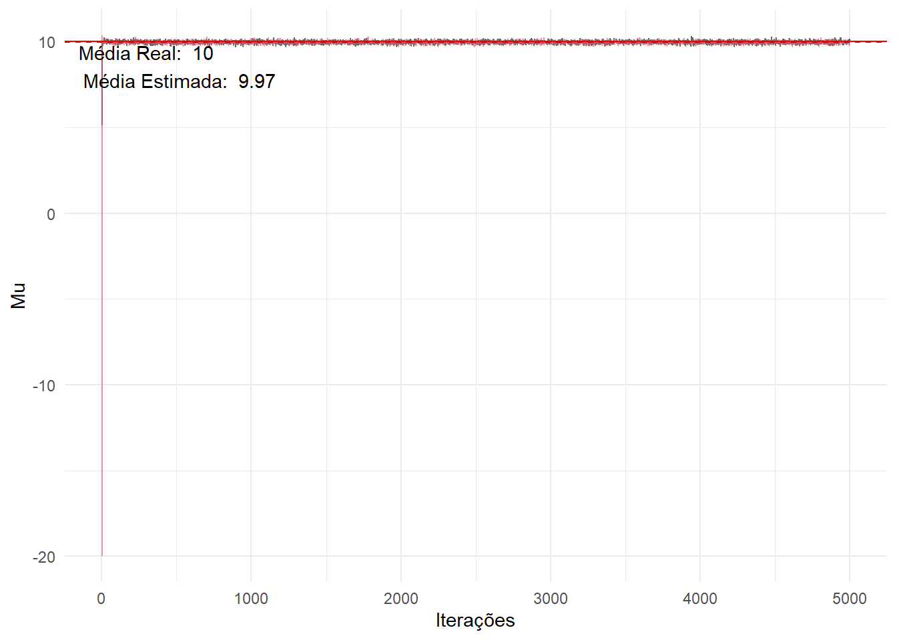
É possível visualizar que, por se tratar do amostrador de Gibbs (onde as amostras são retiradas diretamente das distribuições exatas), a cadeia estabiliza de forma quase imediata, muito antes da iteração 500. Utilizando um burn-in de 1000 iterações, assim fica o gráfico da cadeia de \(\mu\):
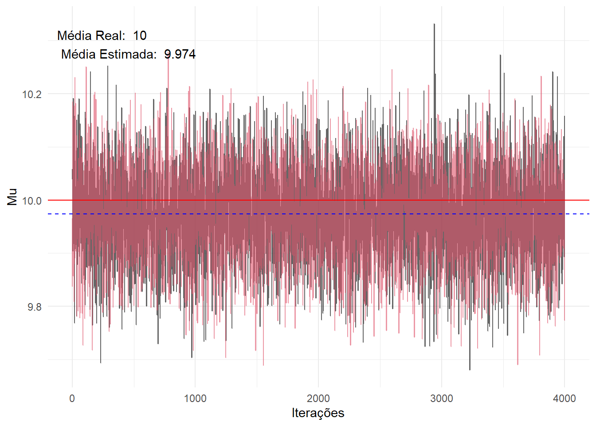
Fazendo apenas a análise do gráfico das cadeias de \(\mu\), não temos nenhuma evidência de que a cadeia não convergiu. Realizando o teste de Gelman-Rubin para convergência das cadeias, temos que:
| Estimativa Pontual | Limite Superior do Intervalo de Confiança |
|---|---|
| 1 | 1 |
Como o gráfico não traz nenhum indício de que as cadeias não convergiram, e o teste de Gelman-Rubin nos deu uma estimativa pontual cravada em 1, nós temos um forte indício de que a cadeia convergiu perfeitamente para a distribuição a posteriori de \(\mu\).
Estudo para \(\sigma^2\):
Visualização das cadeias da amostra gerada da posteriori para \(\sigma^2\) incluindo o burn-in:
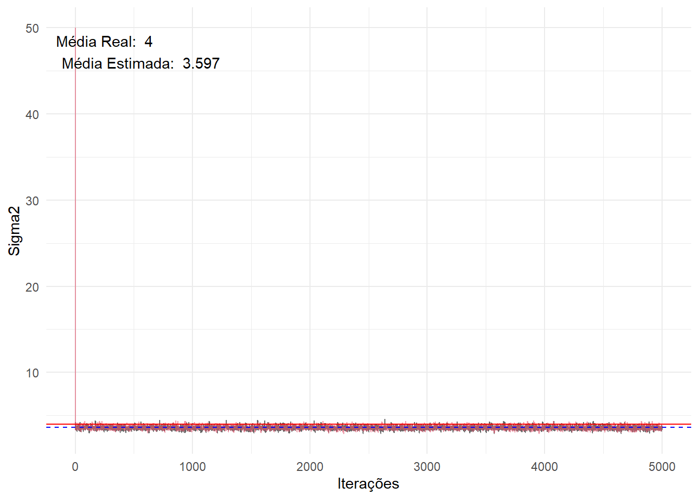
Novamente, é possível visualizar que a cadeia estabiliza de forma extremamente rápida. Utilizando um burn-in de 1000 iterações, assim fica o gráfico da cadeia de \(\sigma^2\):
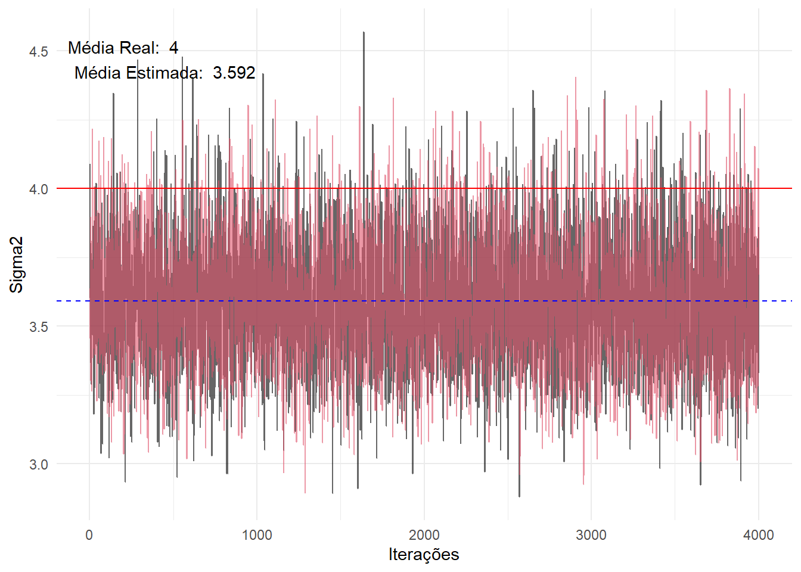
Fazendo a análise do gráfico das cadeias de \(\sigma^2\), não temos nenhuma evidência de que a cadeia não convergiu. Realizando o teste de Gelman-Rubin para convergência das cadeias, temos que:
| Estimativa Pontual | Limite Superior do Intervalo de Confiança |
|---|---|
| 1 | 1 |
Assim como em \(\mu\), a estimativa pontual de 1 do teste de Gelman-Rubin reforça fortemente a convergência das cadeias para a distribuição a posteriori de \(\sigma^2\).
Realizando o estudo de autocorrelação das cadeias de \(\mu\) e \(\sigma^2\)
Warning: pacote 'forecast' foi compilado no R versão 4.5.3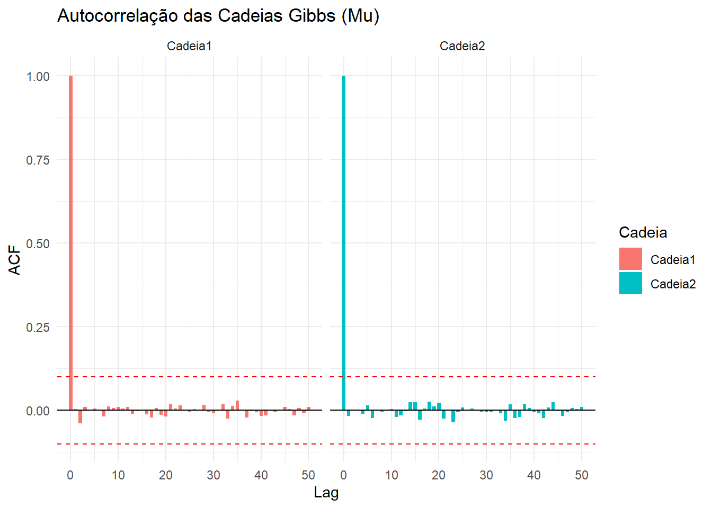
Para as cadeias de \(\mu\) no Amostrador de Gibbs, a autocorrelação despenca e fica em um nível ideal logo no lag 1.
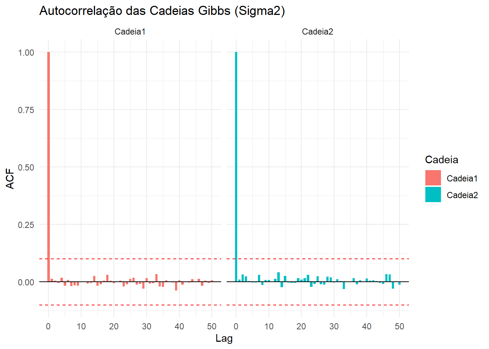
Para as cadeias de \(\sigma^2\), o comportamento é idêntico: a autocorrelação é nula quase que imediatamente.Diferente do algoritmo Metropolis-Hastings, o Amostrador de Gibbs gera amostras diretamente das condicionais exatas, resultando em uma taxa de aceitação de 100% e, consequentemente, correlação mínima entre as iterações. Dessa forma, decidimos utilizar um lag igual a 1 (ou seja, não aplicaremos nenhum thinning descarte, aproveitando toda a amostra gerada após o burn-in).
Comparação com a distribuição analítica
Para \(\mu\):
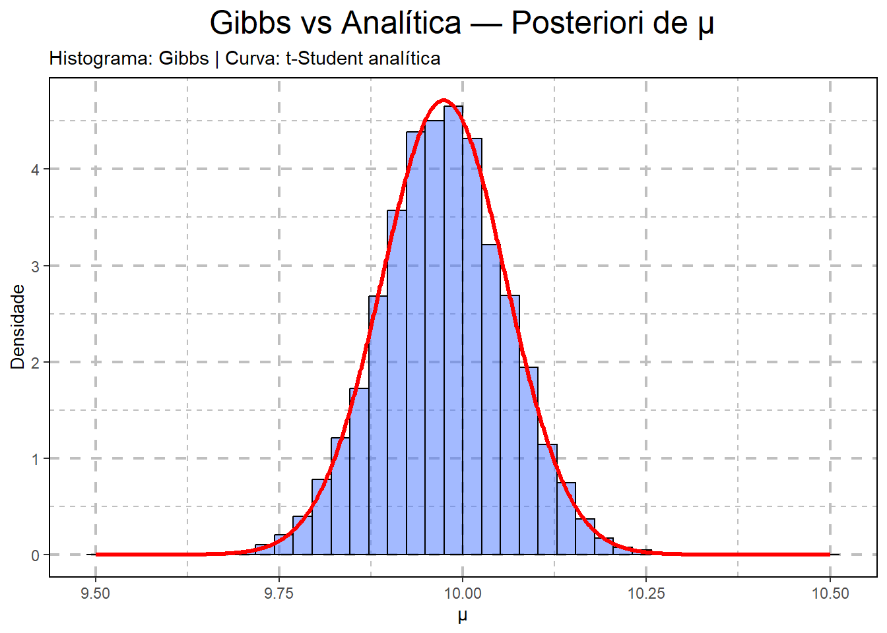
Para \(\sigma^2\):
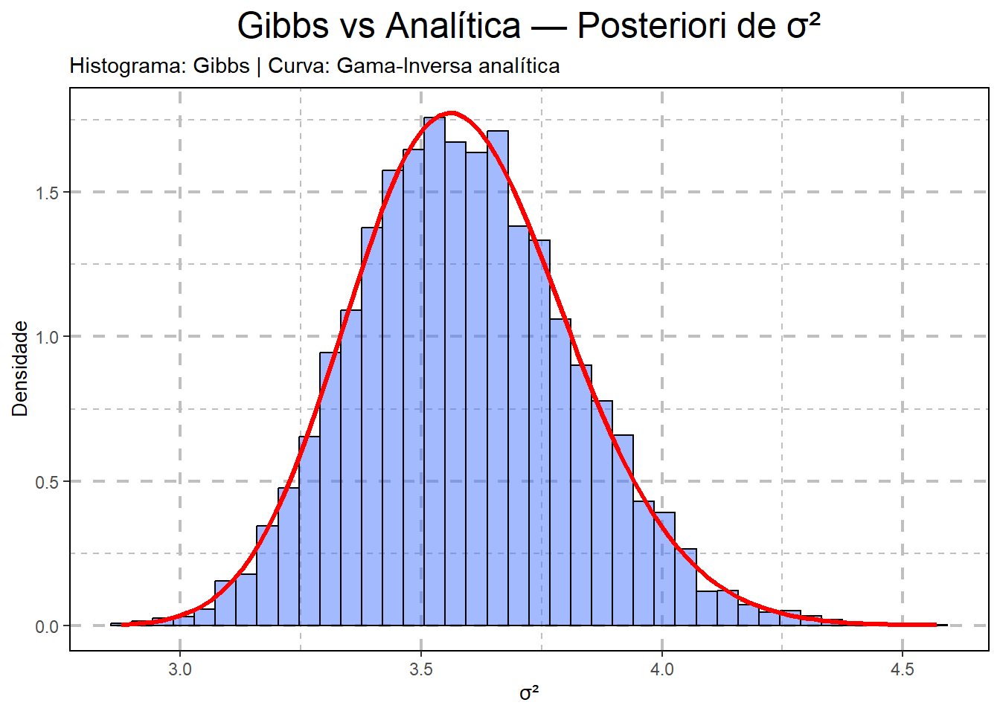
Tabela comparativa:
| Parâmetro | Média Gibbs | Moda Gibbs | Variância Gibbs | Média Analítica | Moda Analítica | Variância Analítica |
|---|---|---|---|---|---|---|
| µ | 9.9735 | 9.9808 | 0.0073 | 9.974 | 9.9740 | 0.0072 |
| σ² | 3.5916 | 3.5328 | 0.0521 | 3.589 | 3.5677 | 0.0515 |
A comparação entre as distribuições obtidas pelo algoritmo de Gibbs e as distribuições analíticas da Parte 1 indica que este método forneceu uma aproximação excepcional e superior em eficiência. Para \(\mu\), o histograma se ajusta de maneira quase idêntica à curva analítica, sendo que os valores de média e moda simuladas acompanham na risca os teóricos de \(9{,}974\), assim como sua variância. O mesmo rigor de aproximação ocorre para \(\sigma^2\), onde os valores simulados empatam com os resultados obtidos analiticamente. Por reter uma quantidade muito maior de amostras efetivas (Effective Sample Size), já que não precisou de thinning, o erro de simulação de Monte Carlo pelo Gibbs foi irrisório.
f) Implemente o Metropolis-Hastings e obtenha amostras das distribuições a posterior para \(µ\) e \(σ^2\). Inicie as cadeias nos mesmos valores inciais considerados no item anterior. Faça uma análise da convergência das cadeias e da autocorrelação. Considere uma amostra com baixa correlação entre os valores gerados e Compare a distribuição obtida usando este amostrador e a distribuição analítica obtida na Parte 1 (Compare os gráficos das distribuições, as médias, modas e variâncias.
Estudo para \(\mu\):
Visualização das cadeias da amostra gerada da posteriori para \(\mu\) incluindo o burn-in:
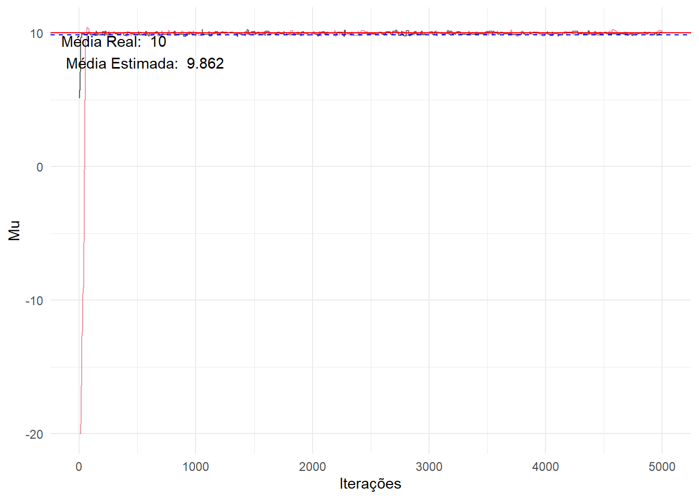
É possível visualizar que a cadeia estabiliza aproximadamente na iteração 500. Utilizando um burn-in de 1000 iterações, assim fica o gráfico da cadeia de \(\mu\):
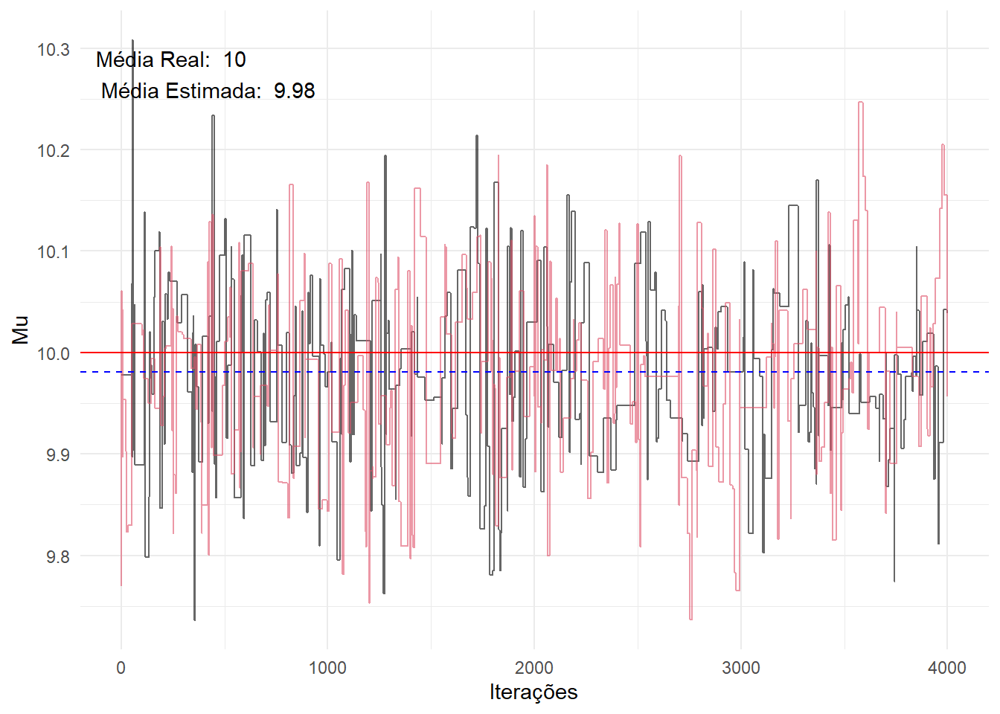
Fazendo apenas a análise do gráfico das cadeias de \(\mu\), não temos nenhuma evidência de que a cadeia não convergiu. Realizando o teste de Gelman-Rubin para convergência das cadeias, temos que:
| Estimativa Pontual | Limite Superior do Intervalo de Confiança |
|---|---|
| 1.02 | 1.07 |
Como o gráfico não trás nenhum indício de que as cadeias não convergiram, e o teste de Gelman-Rubin nos deu uma estimativa pontual de 1.02 (Valores próximos de 1 indicam que a cadeia pode ter convergido), nós temos um forte indício de que a cadeia convergiu para a distribuição à posteriori de \(\mu\).
Estudo para \(\sigma^2\):
Visualização das cadeias da amostra gerada da posteriori para \(\sigma^2\) incluindo o burn-in:
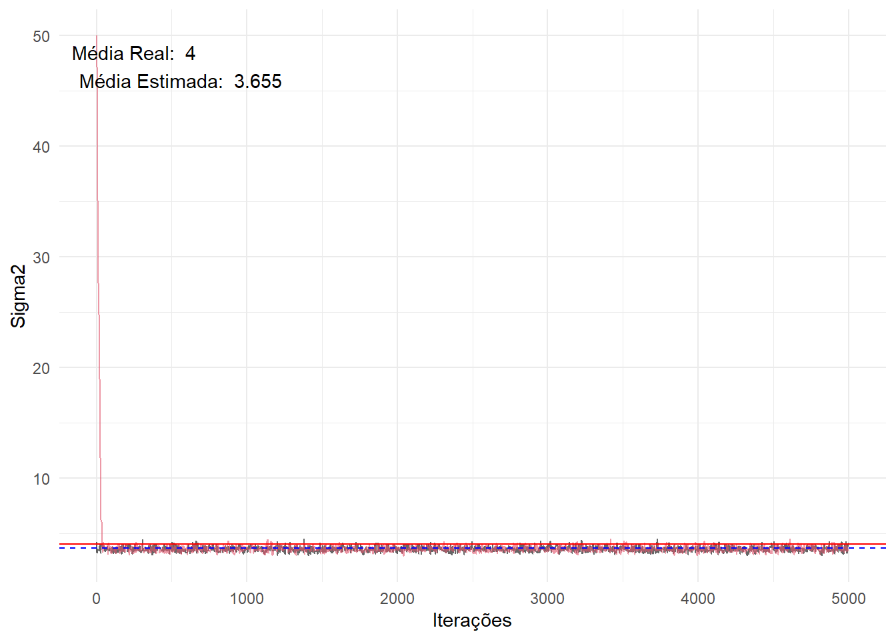
É possível visualizar que a cadeia estabiliza antes da iteração 500. Utilizando um burn-in de 1000 iterações, assim fica o gráfico da cadeia de \(\sigma^2\):
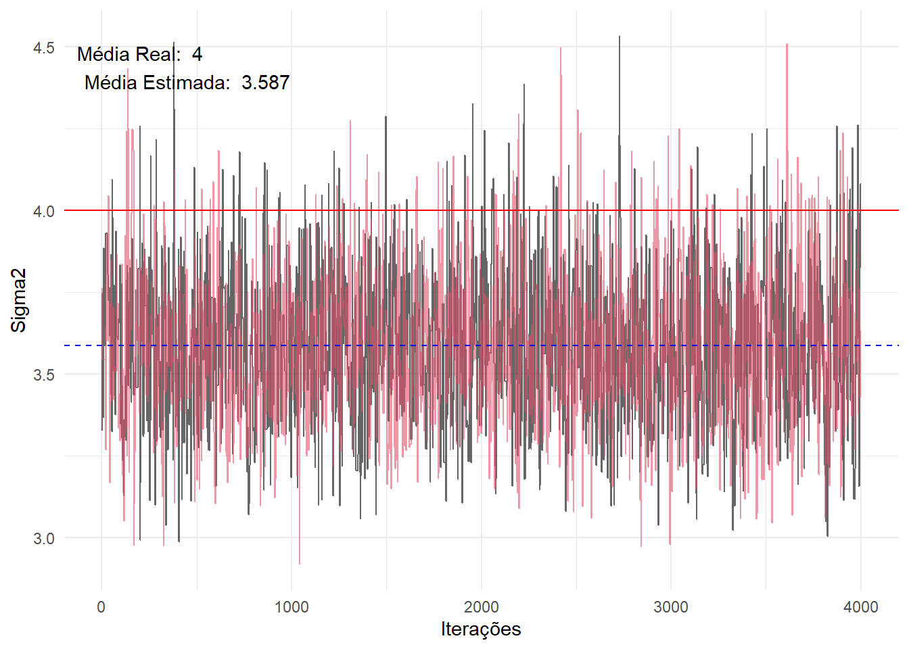
Fazendo apenas a análise do gráfico das cadeias de \(\sigma^2\), não temos nenhuma evidência de que a cadeia não convergiu. Realizando o teste de Gelman-Rubin para convergência das cadeias, temos que:
| Estimativa pontual | Limite Superior do Intervalo de Confiança |
|---|---|
| 1 | 1.01 |
Como o gráfico não trás nenhum indício de que as cadeias não convergiram, e o teste de Gelman-Rubin nos deu uma estimativa pontual de 1 (Valores próximos de 1 indicam que a cadeia pode ter convergido), nós temos um forte indício de que a cadeia convergiu para a distribuição à posteriori de \(\sigma^2\).
Realizando o estudo de autocorrelação das cadeias de \(\mu\) e \(\sigma^2\)
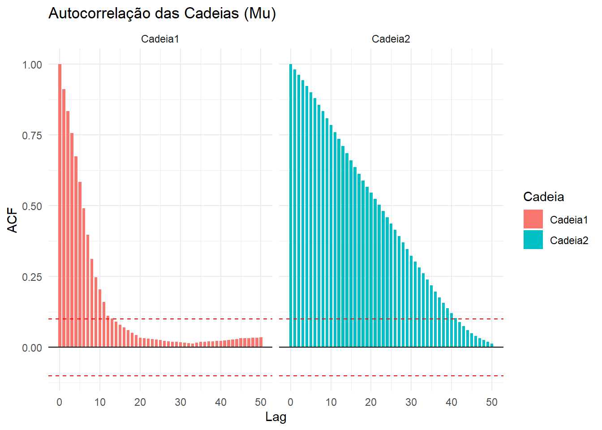
Para as cadeias de \(\mu\), a autocorrelação fica em um nível ideal em um lag aproximadamente de 30.
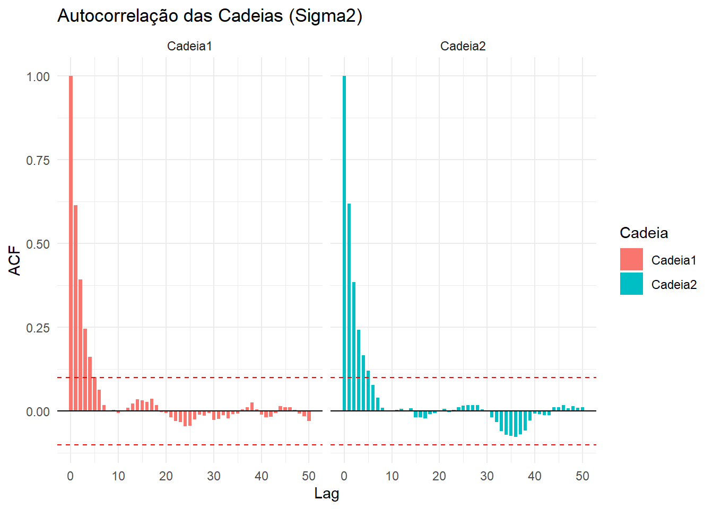
Para as cadeias de \(\sigma^2\), a autocorrelação fica em um nível ideal em um lag aproximadamente de 10.
Ao fazer o estudo de autocorrelação para \(\sigma^2\) e \(\mu\), decidimos manter um lag de 30, pois é onde a autocorrelação é baixa tanto em \(\mu\) quanto em \(\sigma^2\).
Comparação com a distribuição analítica
Para \(\mu\):
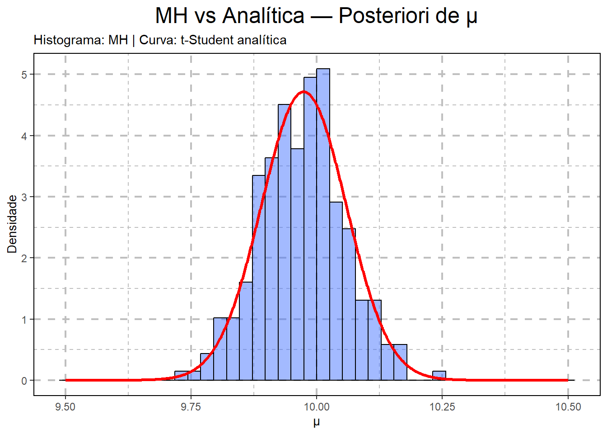
Para \(\sigma^2\):
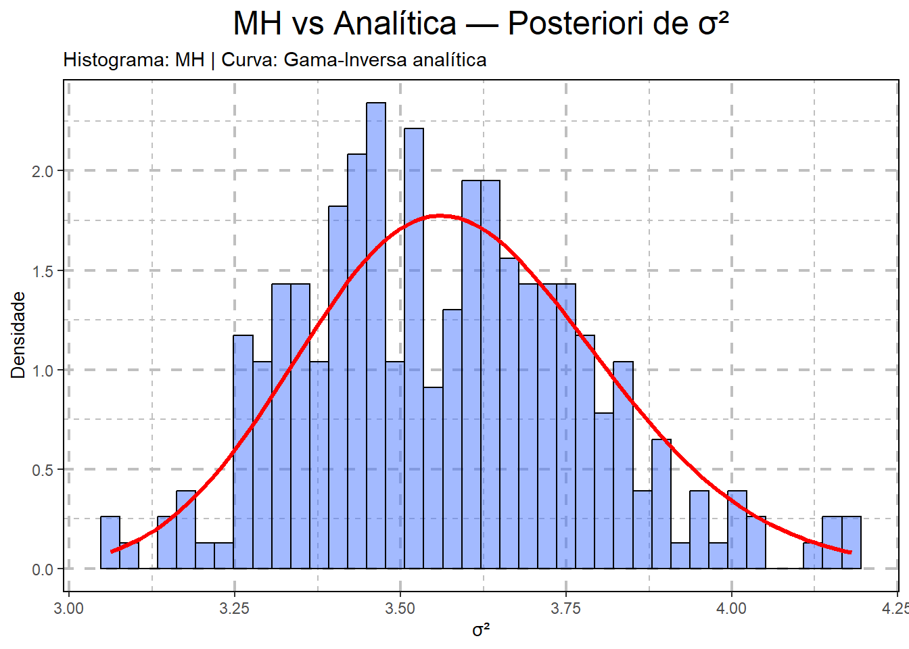
Tabela comparativa:
| Parâmetro | Média MH | Moda MH | Variância MH | Média Analítica | Moda Analítica | Variância Analítica |
|---|---|---|---|---|---|---|
| µ | 9.9703 | 9.9807 | 0.0072 | 9.974 | 9.9740 | 0.0072 |
| σ² | 3.5652 | 3.4587 | 0.0455 | 3.589 | 3.5677 | 0.0515 |
A comparação entre as distribuições obtidas pelo algoritmo Metropolis-Hastings e as distribuições analíticas da Parte 1 indica que o algoritmo forneceu uma boa aproximação para ambos os parâmetros. Para \(\mu\), o histograma das amostras geradas pelo MH se ajusta bem à curva t-Student analítica, e as estatísticas são praticamente idênticas: média \(9{,}970\) vs \(9{,}974\), moda \(9{,}981\) vs \(9{,}974\) e variâncias iguais de \(0{,}0072\). Para \(\sigma^2\), os valores também estão próximos: média \(3{,}565\) vs \(3{,}589\), moda \(3{,}459\) vs \(3{,}568\) e variância \(0{,}0455\) vs \(0{,}0515\). As pequenas discrepâncias observadas são esperadas e decorrem da natureza estocástica do algoritmo, não indicando falha na aproximação.
g) Os dois algoritmos forneceram boas aproximações da distribuição a posteriori exatas? Justifique.
Sim, ambos os algoritmos forneceram excelentes aproximações para as distribuições a posteriori exatas, conseguindo reconstruir com grande precisão as propriedades estocásticas (médias, modas, variâncias e o formato geral das densidades) calculadas analiticamente na Parte 1.
Contudo, embora ambos tenham atingido o objetivo de convergência, eles operam de formas matemáticas distintas, o que se reflete na eficiência de cada um.
1. Amostrador de Gibbs
O Amostrador de Gibbs foi o algoritmo mais eficiente para esse problema.
Justificativa Teórica: Como a priori utilizada foi a conjugada natural (Normal-Gama Inversa), conhecemos explicitamente as distribuições condicionais completas de \(\mu \mid \sigma^2,x\) e \(\sigma^2 \mid \mu,x\). O Gibbs realiza sorteios diretos dessas distribuições em cada iteração, o que implica taxa de aceitação igual a 100%.
Eficiência Prática: Devido à amostragem direta, a autocorrelação das cadeias caiu praticamente para zero já no lag 1. Dessa forma, não foi necessário aplicar thinning, permitindo o aproveitamento de praticamente todas as iterações após o período de burn-in (cerca de 8000 amostras). Como consequência, as estimativas obtidas foram praticamente idênticas às analíticas, diferindo apenas na terceira ou quarta casa decimal.
2. Algoritmo de Metropolis-Hastings
O algoritmo de Metropolis-Hastings também produziu excelentes aproximações para a distribuição a posteriori, porém com um custo computacional maior.
Justificativa Teórica: Diferentemente do Gibbs, o MH não realiza sorteios diretos das distribuições condicionais. Em vez disso, gera propostas por meio de distribuições auxiliares (Normal para \(\mu\) e Log-Normal para \(\sigma\)) e aceita ou rejeita essas propostas segundo uma probabilidade de aceitação. Como consequência, surgem repetições de estados na cadeia quando propostas são rejeitadas.
Eficiência Prática: Essa característica gerou níveis mais elevados de autocorrelação. Nos diagnósticos realizados, observou-se que a autocorrelação de \(\mu\) somente atingiu níveis adequados por volta do lag 30. Assim, foi necessário aplicar thinning, armazenando apenas uma observação a cada 30 iterações, reduzindo significativamente o tamanho efetivo da amostra (Effective Sample Size – ESS).
As pequenas discrepâncias observadas nas estimativas do MH (por exemplo, variância de \(\sigma^2\) igual a \(0,0455\) frente ao valor analítico de \(0,0515\)) não representam falhas do método. Elas decorrem apenas da variabilidade inerente ao erro de Monte Carlo associado ao menor tamanho efetivo da amostra.
Caso o número total de iterações fosse aumentado (por exemplo, para 100.000 iterações), as estimativas do MH tenderiam a coincidir praticamente com aquelas obtidas pelo Gibbs e com os valores analíticos.
Comparação entre os métodos
| Critério | Amostrador de Gibbs | Metropolis-Hastings |
|---|---|---|
| Taxa de aceitação | 100% | Variável |
| Autocorrelação | Muito baixa | Relativamente alta |
| Necessidade de thinning | Não | Sim |
| Tamanho efetivo da amostra | Alto | Menor |
| Precisão das estimativas | Quase idêntica à analítica | Excelente aproximação |
| Eficiência computacional | Muito alta | Moderada |
| Aplicabilidade | Modelos conjugados | Modelos conjugados e não conjugados |
Conclusão
Os resultados evidenciam que ambos os algoritmos foram capazes de reproduzir adequadamente as distribuições a posteriori exatas. Entretanto, em modelos normais com prioris conjugadas, o Amostrador de Gibbs apresenta desempenho superior devido à possibilidade de amostragem direta das distribuições condicionais completas, produzindo cadeias com baixa autocorrelação e alta eficiência amostral.
Por outro lado, o Metropolis-Hastings demonstra sua grande flexibilidade, sendo capaz de aproximar corretamente distribuições a posteriori mesmo quando as condicionais completas não são conhecidas. Por essa razão, permanece como uma ferramenta fundamental para problemas Bayesianos mais gerais e modelos não conjugados.